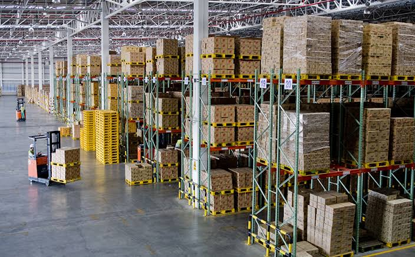

¿Qué son la logística y los inventarios?
La logística coordina el movimiento y almacenamiento de materiales desde los proveedores hasta el cliente. El inventario es el conjunto de materias primas, productos en proceso y artículos terminados que conserva una empresa.
Conceptos fundamentales
- Inventario mínimo: nivel reducido que la empresa procura mantener para atender sus operaciones sin acumular materiales innecesarios.
- Inventario de seguridad: cantidad adicional para responder a retrasos del proveedor o aumentos inesperados de la demanda.
- Punto de pedido: nivel de existencias que indica cuándo debe realizarse una nueva compra.
Como referencia, el punto de pedido puede calcularse multiplicando la demanda durante el plazo de reposición y sumando el inventario de seguridad.
Problemas de inventario
Exceso de inventario
Inmoviliza dinero, ocupa espacio y aumenta los costos de almacenamiento. También puede generar deterioro u obsolescencia de los materiales.
Falta de materiales
Puede detener las máquinas, retrasar los pedidos y obligar a realizar compras urgentes más costosas.
Aplicaciones prácticas
- Controlar las existencias de resina plástica mediante registros actualizados.
- Establecer niveles de seguridad para pigmentos y otros insumos esenciales.
- Organizar el almacén por referencias, rotación y facilidad de acceso.

Tipos de inventario y su utilidad
| Tipo | Descripción | Utilidad |
|---|---|---|
| Materia prima | Materiales pendientes de transformación. | Abastecer la fabricación. |
| En proceso | Productos que todavía no están terminados. | Controlar el flujo entre operaciones. |
| Producto terminado | Artículos listos para despachar. | Atender los pedidos de los clientes. |
| Seguridad | Reserva adicional ante incertidumbre. | Reducir el riesgo de desabastecimiento. |